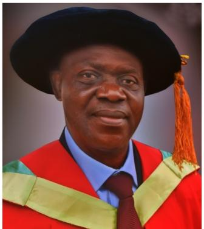
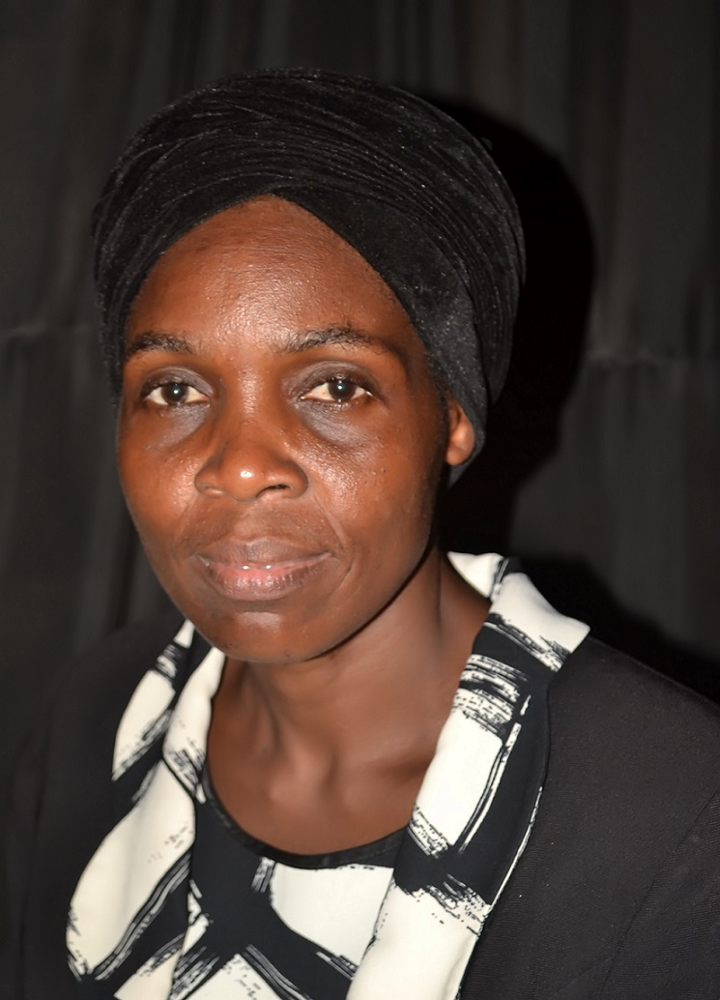

Aiyeleye, F. B. has obtained a Bachelor of Science degree in Biochemistry from the University of Lagos, and completed his MSc and PhD at the University of Ibadan, Ibadan and Federal University of Agriculture, Abeokuta, Nigeria respectively.

Mr. Adebola Ajayi, Food Technologist with focus on Food Eniginering. He had his undergraduate degree in Food Technology from the University of Ibadan, Ibadan in 1984 and Masters in Food Technology in the same University in 1990. Over the years he has been engaged in meaningful research and teaching.
Sunday is a versatile lecturer, of the Federal Polytechnic Ilaro, in the department of Food technology in the school of Pure and Applied sciences. He lectures students on courses like Food Chemistry, Water and Waste Management and Entrepreneurship. Due to his passion for a sustainable food security system and quest to make progress in reducing protein malnutrition, he majors in value-addition to snacks through under-exploited leguminous crop seeds

Noah Abimbola Aduke obtained a B.Sc in Microbiology from Ogun State University and M.Sc in Microbiology from the University of Lagos. She has lectured both in College of Education and Polytechnic for a number of years. She has not only been involved in classroom teaching butalso had working experience in the Food and Beverage Industry

Makanjuola, Olakunle Moses is a product of two most valuable systems of Education, i.e Polytechnic and University. He has Masters Degree (Masters of Technology) in Food Science and Technolgy from the Federal University of Technology, Akure, Ondo State. He has over 25 years expereience as an academic staff of the Federal Polytechnic, Ilaro, Ogun State. He is the Zonal Coordinator (Ogun zone) of the Presitgious Nigeria Institure of Food Science and Technolgy (NIFST).

Adebowale, Olalekan holds first and second degrees in Food Science and Technology from the Federal University of Agriculture, Abeokuta. he joined the Federal Polytechnic, Ilaro as Lecturer I in the Department of Food Technology. He was appointed as the Departmental Examination Officer, a post he held for 8 years without any form of misconduct
Omotayo Aderonke Alokun, is a young, vibrant, hardworking and versatile a graduate of Federal University of Technology, Akure, Ondo State where she obtain her 1st and 2nd Degree (B.Tech and M.Tech in Food Science and Technology). She is a lecturer of Federal Polytechnic Ilaro, in the department of Food Technology in the School of Pure and Applied Sciences, where she lectures student on courses like Food Plant Sanitation and Design, Processing and Preservation of Plant Product
Femi Coker is a young, vibrant, versatile Lecturer, of The Federal Polytechnic Ilaro, in the department of Food Technology in the school of Pure and Applied Sciences, where he lectures students on courses like Food Chemistry, Food Biochemistry, Food Plant Sanitation and design, Food and Nutrition, Food Packaging, Cereal Technology, Food Quality Control and Statistics and Food Quality Control and Analysis just to mention a few.
Komolafe Olakunle holds a Bachelor of Technology degree in Food Engineering from Ladoke Akintola University of Technology, Ogbomoso. He joined the Federal Polytechnic, Ilaro as an Assistant Lecturer in the Department of Food Technology in 2014
Noah, A.A and Adebisi, K.A (2019). Microbial Quality and Sensory Evaluation of Akara produced from Bambara and cowpea flour blends. In Akinwande, B.A et al. (ed). In Novelty in foods science and technology: A road map to food security and sustainability. Proceedings of 5th Regional food science and technology summit organised by Nigeria Institute off Food Science and Technology, NIFST, WesternChapter (ReFOST 2019) pp. 336-340
I am an assistant lecturer with 4-month experience at the department of Food Technology with my research interest in Food Processing and Preservation, HACCP, Food quality control just to mention a few, I love research on underutilized indigenous raw materials which can be utilized in industries, thereby promoting their usage. My love for knowledge and research has made me to further my academic programme by enrolling for a doctoral programme at the University of Ibadan.
I am an assistant lecturer with 4 months experience. My research interest include Food Quality Control and Assurance. I currently take courses at National Diploma (ND) leve
Mohammed, Abiola Omobonike, Chief Technologist in the Department of Food Technology, (HND, PGD,Food Technology, BSc Microbiology). My research interest is on Processing and Preservation My carear objective is always poised in achieving result in a challenging working environment and delilgting of in serious drive for practical academic destruction and excellence at all time through hard work and commitment
Adeosun Omozele Bukola is a Technologist in the Department of Food Technology Federal Polytechnic, Ilaro Ogun state. She Obtained her Higher National Diploma (HND) in Food Technology from Federal Polytechnic Ilaro in (2011). She also holds B.sc and M.sc degree in Microbiology from the Crescent University Abeokuta and University of Ibadan, Ibadan respectively.
Ilesanmi, Idayat Oladamola is a Technologist II in the Department of Food Technology, School of Pure and Applied Sciences, The Federal Polytechnic Ilaro, OgunState, She takes practical courses in microbiology and her research interest is basically on processing and preservation of food products with the aid of locally fabricated equipment.